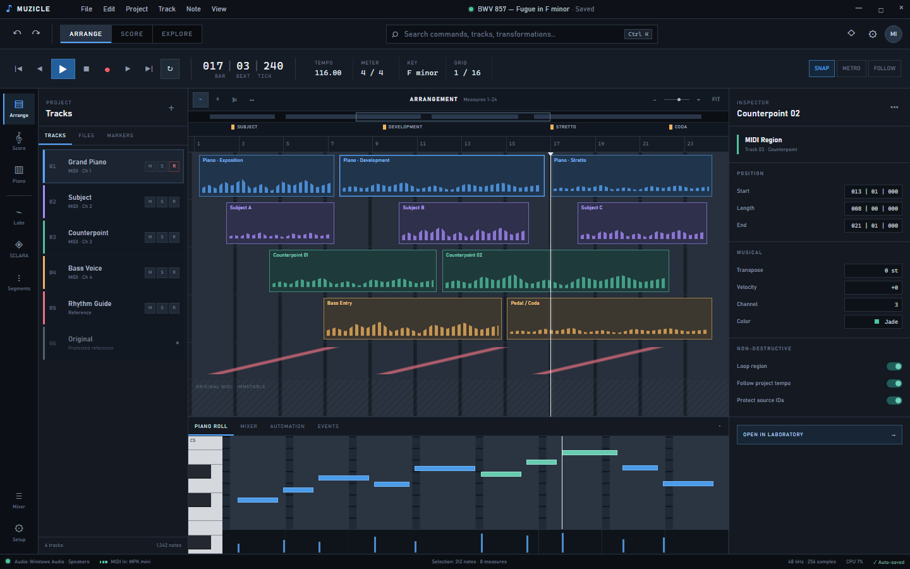
THE MIDI TRANSFORMATION WORKSTATION
Keep your DAW.
Expand the music.
Develop MIDI through named musical processes, deliberate scope, responsive arranging, notation, recording, and standard-format export.

THE MIDI TRANSFORMATION WORKSTATION
Develop MIDI through named musical processes, deliberate scope, responsive arranging, notation, recording, and standard-format export.
CURRENT PRODUCT OVERVIEW
THE MIDI TRANSFORMATION WORKSTATION
Develop MIDI through named musical processes, deliberate scope, responsive arranging, notation, recording, and standard-format export. Choose the Muzicle workspace that fits the way you think.
Windows desktopStandard MIDI workflowThree current UI profiles
Studio Console - arrangement, editing, and inspection in one production-focused surface.
THE MUZICLE LISTENING ROOM
Four original, rights-cleared motifs demonstrate an unmodified source and three distinct outcomes. Select any waveform to compare process families in sound, not just in words.
Hear pitch and interval logic reshape a single melodic identity.
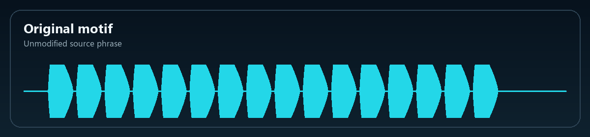
0:00Compare added accents, wider duration, and a new syncopated pocket.
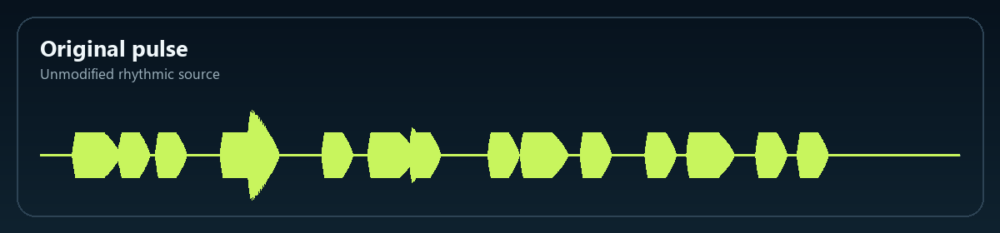
0:00Listen to pitch, time, and phrase direction separate and recombine.
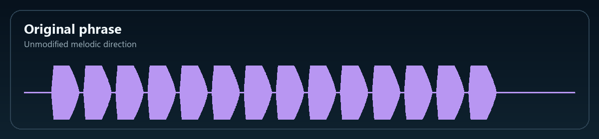
0:00Compare stacked variants, fixed anchors, and a newly combined voice.
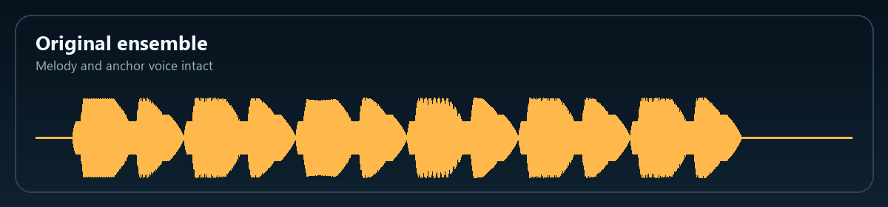
0:00About the demos: all sixteen WAV files were composed and synthesized for this launch kit. They illustrate process families and do not claim to be application renders of a specific preset or registration.
A SPECIALIST BESIDE YOUR DAW
Keep your instruments, audio editing, automation, mixing, and delivery environment. Add a compositional stage for shaping MIDI with named registrations, visible parameters, selective scope, preview, project history, and intelligible export.
THREE CURRENT MUZICLE INTERFACES
Choose an interface style without changing the musical engine or document underneath it. Every view responds from desktop to phone.
Production-focused clarity
Tracks, arrangement regions, piano roll, inspector, transport, and direct Laboratory access keep editing decisions visible.
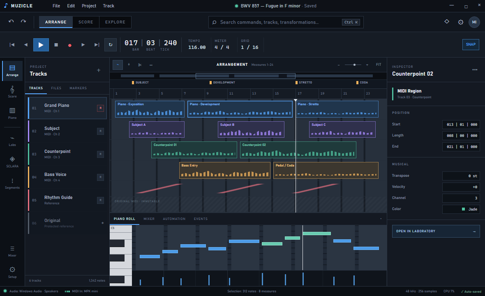
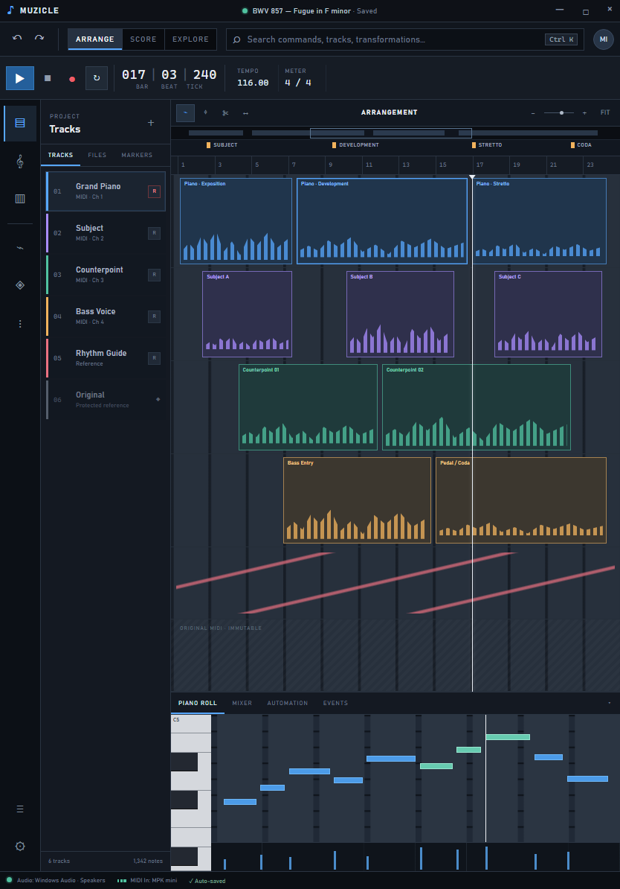
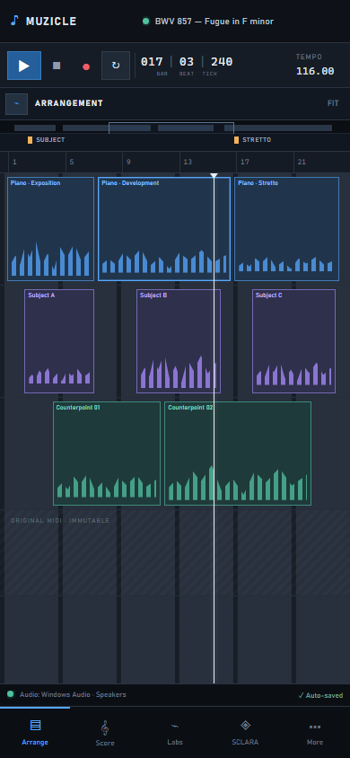
Score-aware process building
A Track Deck, Signal & Process chain, score lens, and Original / Preview / Apply comparison support compositional judgment.
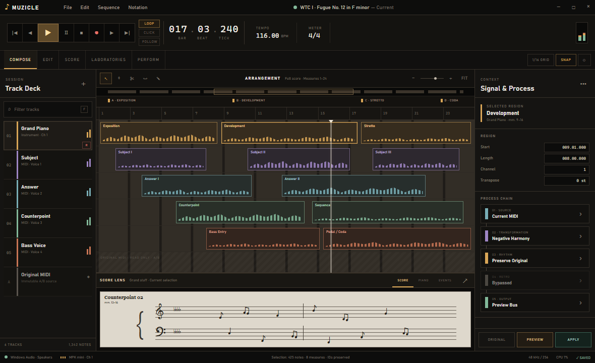
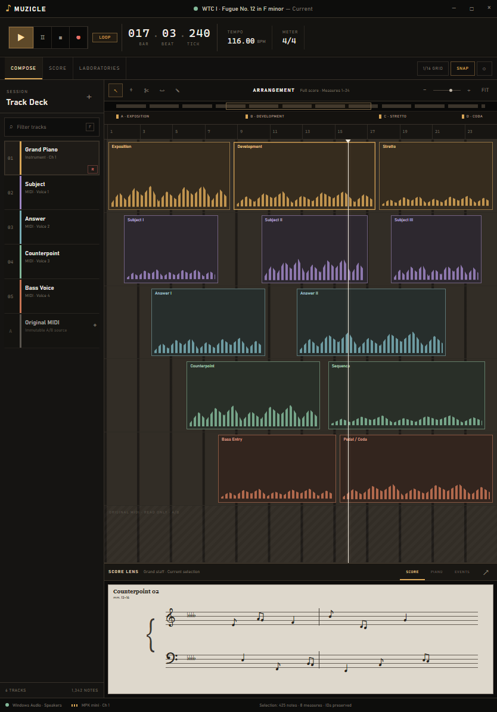
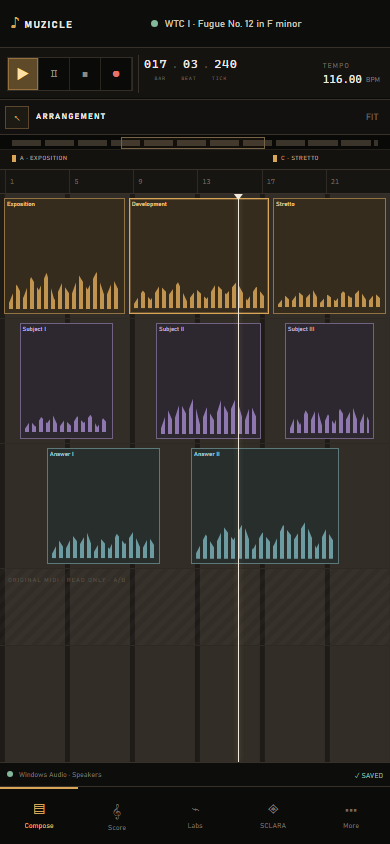
High-density creative control
Voices and Layers, Function Rack, explicit region scope, transform slots, Signal Deck, and Lab Preview create a focused command surface.
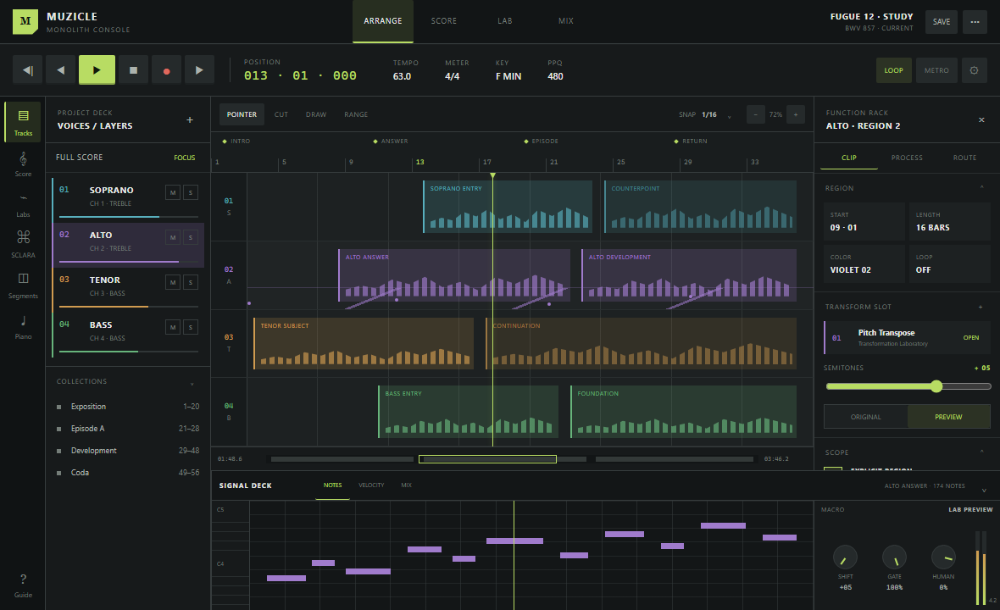
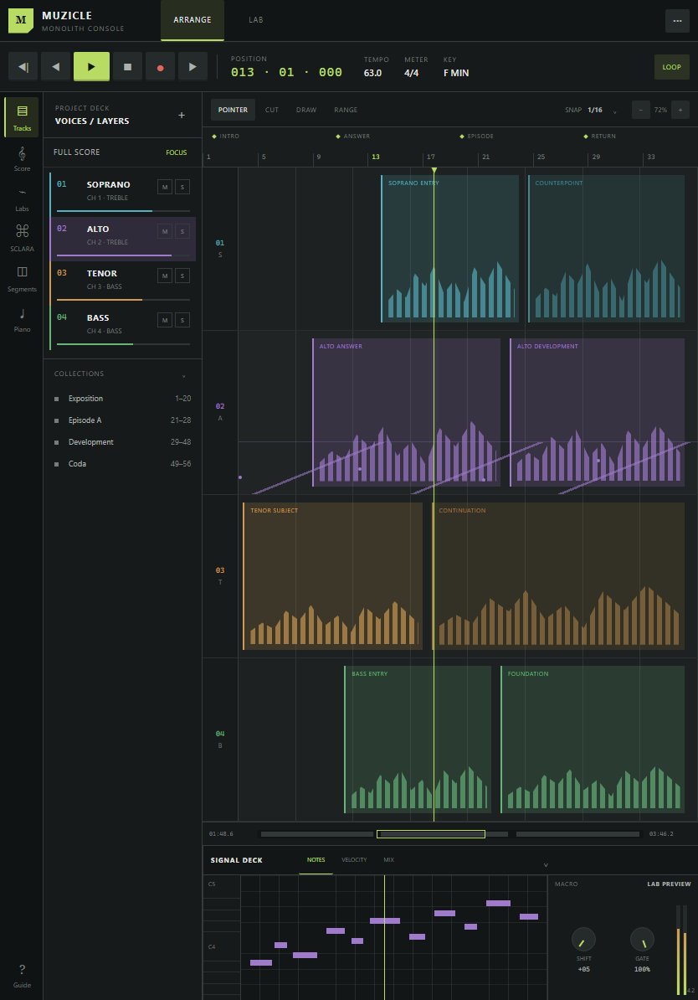
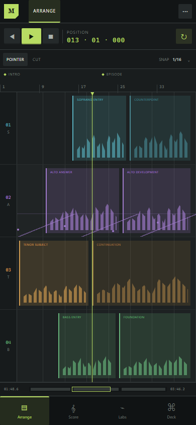
CURRENT WORKFLOW WALKTHROUGHS
These animated guides use the current Muzicle interfaces and documented release workflows.
SCLARA
SCLARA develops source material through explicit scope, seedable decisions, source preservation, undo, project save/reload, and standard MIDI interchange. The result is repeatable when you want it to be, exploratory when you do not.
Stack and multiply
Scramble rebuilds an arrangement by stacking transformed copies of source clips across output tracks. Choose the stack-depth range, allowed basic or cross-Laboratory processes, and seed.
Transform selectively
Lasamble assigns one enabled musical transformation to each affected clip while allowing selected reference tracks to remain fixed, unchanged, and available as structural anchors.
Combine into a new voice
Ramble independently transforms one to three selected clips, applies a controllable density, and mixes the results into a dedicated Ramble Result track without rewriting the sources.
SCLARA is choice with memory: the personality, scope, recipe set, and seed remain intelligible, reproducible, and undoable.
DEVELOPMENT ENVIRONMENTS
Segment Studio and Repetition Laboratory turn structural editing into a musical process rather than a sequence of generic copy-and-paste commands.
SEGMENT STUDIO
Define regions manually or by precise tick range, then split, merge, label, lock, remove, and transform them without losing sight of the source. Segment Studio handles notes that cross boundaries, supports direct MIDI export for one region, and creates a verified multi-file package for a complete set.
REPETITION WORKFLOW
A normal DAW repeat loops playback or duplicates a clip. Muzicle's Repetition Workflow generates editable MIDI copies from exact musical ranges, then lets the repetition itself become material for development.
THREE MUSICAL LABORATORIES
Hover over or focus a Laboratory name to browse every registration. Open its dedicated showcase to hear and see ten featured processes in motion.
Pitch and structural development through mirror inversion, tonal and functional operations, scale-constrained mapping, interval logic, octave policy, partial ranges, and evolving axes.
Explore 10 featured processes →Timing, density, articulation, cadence, groove, and phrase development through deterministic parameterized registrations.
Explore 10 featured processes →Temporal and directional reinterpretation through reverse timing, timing-preserving retrograde, phrase-aware behavior, and voice roles.
Explore 10 featured processes →Combine processes across the three Laboratories and each result can become new source material. The design space grows beyond any fixed menu—an effectively inexhaustible field for a lifetime of musical discovery.
CURRENT RELEASE CAPABILITIES
Every capability below belongs to the qualified current Muzicle workflow across interface, transport, Laboratories, projects, and responsive layouts.
Pointer and range tools, zoom, fit, pan handles, vertical scrolling, clip menus, left-click seek, markers, snap, and editable position.
Edit tempo, meter, and key; set a visible loop range; use metronome and Off, Page, or Continuous follow behavior.
Track selection defines transformation scope. Mute, solo, record-arm, MIDI recording, multiple takes, and take selection are available.
Undo, redo, cut, copy, paste, delete, move, nudge, select all, next-object navigation, and project/track/MIDI shortcuts.
Move among timeline, piano, notation, mixer, automation, and events while preserving the same project context.
Apply named registrations to checked scope, retain project history, and identify the active transformation for smart export naming.
Build editable regions, assign cross-Lab processes, and use Scramble, Lasamble, or Ramble for deliberate source-preserving recombination.
Import standard MIDI, save and reload projects, recover autosaves, export results, and continue production in your DAW.
TECHNICAL OVERVIEW
Public minimum system requirements, licensing terms, support term, upgrade policy, and production checkout terms will be published before sale.
MUZICLE FULL VERSION
Three responsive interfaces, the complete Laboratory catalog, selective track processing, arranging, recording, notation, project history, and standard-format export.
PayPal Checkout activation required before public sale.